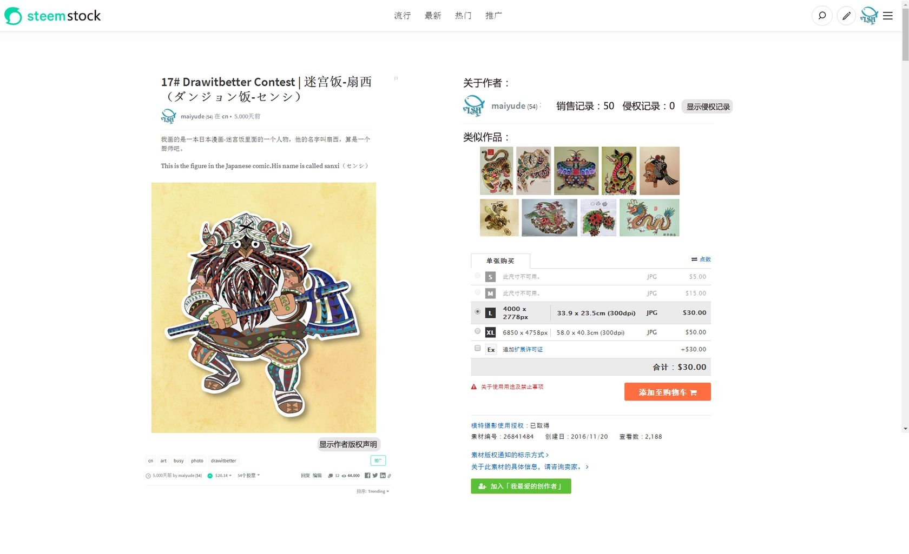
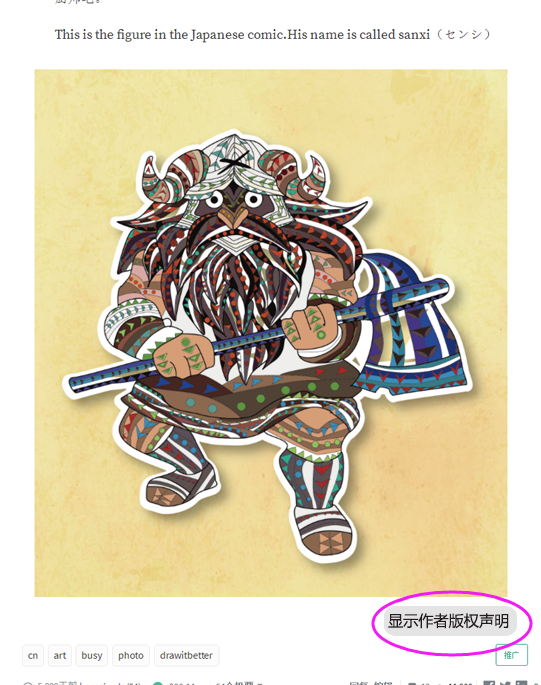
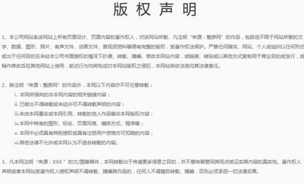
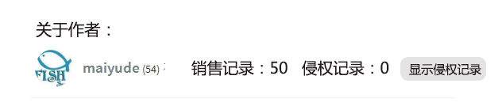
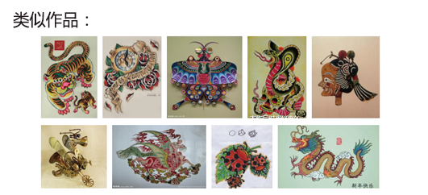
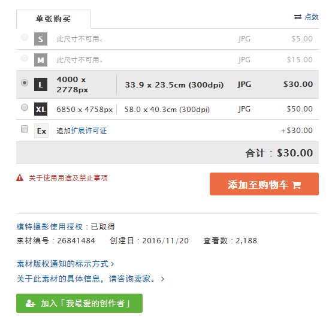

第13章 二次开发
13.1 基于 steem 搭建社交网站
13.2 基于 steem 搭建数据统计网站
13.3 基于 steem 搭建个人博客 88
昨天，我为自己在 steem 上发布的帖子制作了两个镜像网站（镜像1，镜像2）。每天定时跟 steem 同步更新，作为备份用。
镜像网站的好处是：
应急。万一 steemit.com、busy.org 等前端网站挂了，至少我自己的文章还能来镜像访问。
备份。有朝一日万一 steemsql 等数据库黄了，万一区块链挂了，我辛辛苦苦码出的文章还健在。
修改。steem 上的文章过了7天后就没法修改，而镜像网站的永远可以修改，可以精益求精。
评论。镜像网站上配置的是 disqus 评论系统，多引入一个评论方式。
美观。不管 steemit 等网站界面好看难看，我有一片独立的自留地。
快捷。找自己的文章时，再也不用往下拉，载入，等待，再拉，再载入，再等待……
这两个镜像全部是免费搭建的，搭建完毕后就每天自动更新，不用再操心了。
那么，搭建一个这样的网站需要多久？
熟悉 R 语言的话，从零开始到成功访问，整个过程用不了半小时。如果是 R 语言的新手，那么主要取决于多久能学会 R。无论如何，我花了很多时间来尝试，才建立了下面的步骤，这个时间你可以省了。
搭建这两个网站，用的主要工具是 R 语言的 blogdown 包。大体流程是：用 R 语言在本地搭建一个 Hugo 框架的静态网站，然后同步到 GitHub，再由 Netlify 布署。
下面简要说说步骤。
用 R 语言搭建 Hugo 网站
先安装 R 语言和 RStudio。
从 RStudio 的菜单栏创建一个 blogdown 项目，选择中意的网站主题，用不了1分钟，一个静态的 HUGO 网站框架就搭建好了，所有文件都保存在本地的一个文件夹里。
用 R 语言从 steemsql 或 steemdata 下载帖子
如果访问 steemsql 数据库，请安装 R 语言的 RODBC 包；如果访问 steemdata 数据库，请安装 mongolite 包。两个数据库都可以提供 steem 上文章的所有信息。
从数据库将需要的帖子下载到本地，并整理成 markdown 格式的文本文件。
将文本文件拷贝到你的网站文件夹的 contents 里。
运行 R blogdown 的建站函数。
将网站文件夹发布到 Github
在 Github 上创建一个新的项目，将你的网站文件夹发布上去。
用 Netlify 布署
用你的 Github 账号登陆 Netlify，创建一个新站点，选择你的网站文件夹，并用 hugo_0.19 作为布署命令。设置完毕后，短则几秒，长则几分钟，就可以访问你的镜像网站啦！
Netlify 提供免费的二级域名。当然，你也可以买个域名来绑定。
每天自动同步
编写一个批处理程序，来调用 R 代码，从而完成下载帖子、建站、与 GitHub 同步的工作。
用 Windows 的自动任务，每天自动运行上述批处理，就实现了每天自动同步。
13.4 延伸阅读：打开脑洞，我们还能做什么
13.4.1 steemstock——一个伟大的保护版权的区块链图片销售网站 89
打开脑洞，其实基于steem可以建立很多有趣的网站。
比如我们就可以基于steem建立一个伟大的保护版权的图片销售网站。
steemstock是一个建立在steem区块链上的图片销售网站。

在这里，你可以自由的发布你的艺术创作图片，这些图片可以是艺术作品、电脑插画、摄影作品等等。发布之后你可以获得别人的点赞从而获得收益。如果你愿意，你还可以在steemstock出售你的作品，你可以选择出售单次使用权或者出售全部版权。买卖双方都可以在这里购买到你想要的作品。
另外steemstock采用了区块链的特性保证作品版权不受侵害。当作者需要售卖他的作品的时候，他需要发布一份作品版权声明，这份声明将会在区块链上永久保存，这将作为该作品的出生身份证，这将会是该作品的发布证明，可用于任何侵权官司。当然，如果该作品是侵权作品，这将会是他的罪证。


另外系统会显示关于作者过往的销售记录，良好的信誉将会伴随着你的一生，一个侵权记录也会永远陪伴着你。

还会自动全网搜索类似的作品，确保作品为原创。当然作为参与者也可以参与打假，你可以在侵权作品上狠狠的踩上一脚。

在steemstock你可以根据你的需要购买不同尺寸的图片，当然不同尺寸的图片定价也不一样。

steemstock一旦建成，将会是一个促进艺术创造者制造财富的网站。
13.4.2 创建一个基于Steem区块链的中国社区网站 90
经过这些天的学习研究，我认为Steem是一个前景无限的区块链基础设施，中国创业者们完全可以在这个基础设施的上建立一个或数个有社会主义特色的社区网站，哈哈，就是本土风格的区块链网站啦，具体蓝图听我慢慢描绘。
这些想法是受到 @myfirst 发的一篇《解决CN访问慢的问题》启发产生的。在文章中他提到，中国访问Steemit速度很慢，主要有两个原因，一个是Google的字体（谷歌被墙）问题，另一个是图床（远在USA）问题，并给出了自己思考的解决方案，是篇非常棒的文章，我也从中Get到了新知识。
但是，我觉得Steemit要想拉拢更多的中国用户，并抢占中国市场，仅解决以上问题是远远不够的，甚至可以断言，Steemit运营团队根本没有这个能力。
要想让广大的中国用户加入到Steem生态链中，还须靠勤劳智慧的中国人来解决。因为，在中国搞网络服务不是资金雄厚、技术无敌就好使，你还得深谙中国的特色文化，清楚一系列的规则和潜规则。
Steemit血液里流淌的就是Anti-censorship，一个没有审查机制的网站，在中国是绝对没有生存可能性的，咱领导也不可能允许洋人开办的社交媒体类网站在中国发展壮大，请原谅咱领导的不自信吧。很多网络公司不愿来中国，就是因为政策风险太大，担心投资后血本无归。
中国要出现一个基于Steem区块链的网站，必须符合政府进行严格内容审查的要求。办法早就有人提出来了，网站前端展示设置审核机制，通过技术在展示端屏蔽掉，使敏感内容不在显示。对于不符合国家政策的内容，让政府和公众都看不到，问题就解决了。
还要有个黑名单或禁言功能，对于一些反复发垃圾内容的用户，直接禁言或拉黑。Steemit这样靠大鲸在踩死的方法不够高效，不符合中国特色，在中国，咱领导不想让公众看到的东西，分分钟你就得让它消失才行。
做到了这一点，才有了起码的生存可能性，如何对政府监管部门攻关，取得许可牌照则是后话，不在我今天幻想的范围内。
另外，网站还得去迎合中国用户的习惯，满足其使用体验。毫不客气地说，过去，Steemit的用户体验实在是糟糕的很，现在，Steemit的用户体验依然是糟糕的很。
Steemit的用户界面、基础功能（如，更便捷的私信功能，我看中了个漂亮的Steem妹子，怎么私信她要微信号呢？）虽然在不断进化迭代，我觉得进展还是太慢，有很多用户因为这个糟糕的体验离开了。
以CN社区为例，现在CN社区的发贴量和活跃度甚至不如当年我们医学院的小论坛，我想，如若没有金钱诱饵以及一些技术爱好者的支撑，CN社区的很多用户都要流失了。
我感觉Steemit团队可能在运营上有些偏差，太偏向注重区块链的机制的设计，硬叉18、硬叉19，现在马上到硬叉20了，还要插、插、插，不知道什么时候才能插到所有人都爽歪歪。事实上不可能让所有人都满意，世界上没有绝对公平的事情，定好规则先运行，不能朝令夕改。
Steemit团队过于重视技术和程序机制的完美性，而忽略了网络的基本功能是提供服务，即使Steem区块链的理念再先进，技术再强大，把算法再高深精巧，机制设计的天衣无缝，如果网站的体验都不好，也不会形成强大的用户群。
如果是让我搞这个基于Steem区块链的中国社区网站，首先要弄一个虚拟币兑换人民币的便捷接口，不管是通过微信红包，还是支付宝等方式，关键是能让中国的大妈们看懂会用，方便好用就行，速度上并无需太高要求，现在国内很多网站的提现都要等上两个小时甚至数天。
然后想办法大量吸引那些有时间没地儿用的闲杂人等，中国有大量的在岗闲置人员，比如一些事业单位职员、政府公务员等，过去开心网、人人网火的时候，他们偷菜，偷菜，现在他们是刷朋友圈，刷朋友圈。
别以为这些人都是笨蛋，产生不了优质的内容，其实这些人里面很多都是特别有才华的，考入事业单位、公务员不仅需要高学历，还要通过很难的考试。这类人群的智商和情商都不低，只要有动力，他们完全可创造更高价值的内容。就是体制的原因，温水煮青蛙，把它们煮懒了，有些煮瘫痪了。
其实，任何社群对于新人来说，想刚进来就获得好的收益都很很困难。要么花钱造势，要么就是认真经营，不然很难一下子得到很好的声誉或收益。
如果Steem底层的机制不太可能让新用户刚进来就获得收益，不好留住新用户，那就用现金砸出一批初始用户，例如通过“注册就送现金红包”之类的方式吸引一些前期用户，玩够一定的时间和经验，你就可以把现金提走。
当有了第一批初始用户，并让一部分人多多少少赚到了些钱，让公众知道这是一个能赚钱的网站，自然就能吸引越来越多的用户。
根本用不着去炒作区块链、开源等等概念性的东西，普通公众根本也不懂这些概念，多数人想要的无非是一个干净无广告的网站，能发发文章、点点赞，有些社交功能等。看看中国的一些门户网站，广告都快占满整个窗口了，还嫌不够，还要弹窗，干脆把我的屏幕都强奸了吧。
Steemit的宣传也让很多人误解，认为虚拟币就是社交网站上用的，而不理解它像比特币一样也可以进行交易流通，也可以投资。我开始也有同样的误解，认为Steem虚拟币就是专门为这个网站设计的一种区块链货币。
基于Steem区块链可以开发出很多有趣又实用的功能，如增加一个便捷的打赏按钮，我们一点点击作者头像或名字有快捷的打赏入口，增加这个小功能便可以创造很多丰富有趣的玩法，比如付费问答，悬赏任务、在线购物等。
再比如，我想给第6个，第66个、第666个回复本贴的Steemors打赏红包，就非常便捷了，这个就是玩论坛时的抢楼活动嘛，哈哈。
再开发个手机APP啥的，估计那时，年轻貌美的小姑娘们晚上起夜都要摸起手机，顺便发个妩媚的床照，让人点赞，赚点零花钱。
当然啦，我是一个外行，不懂技术也不懂网络运营，只是看热闹产生了一些碎念念，或许能对某些人产生一些启示，或许只能看作天马行空的臆想，反正，人家都说我是一个脑洞大开的医生。
13.4.3 基于steem 建立一个医疗信息公开平台 91
- 1.紧张的医患关系
我曾经有一次去医院看病，看到这样的一种情况。
原来病人有序的排队，但是队伍迟迟不见推进，慢慢的排队的队伍开始涣散，插队的人开始出现。然后慢慢的队伍消失了，变成了人墙围在了前台，还是不是爆发出争吵声。
好奇走上前去，发现只有一位年轻的医生负责所有事务。
这位年轻的小医生的工作有什么呢？根据我观察，要做的事情还真多。
1.负责预约安排胃镜检查的手术，安排1个人大概要花上10分钟。
2.接电话，各种科室打来的电话以及咨询的电话，接一个电话大概要2-3分钟。
3.负责C14呼气实验室，接待病人、检测、打报告，全部是这个医生一个人做。
4.安抚情绪激动的病人们。
这个小医生做的事情可真够多的，但是病人们依然不能理解医生的辛苦，病人们很愤怒，有的排队时间长的甚至大吵大闹了起来。小医生很无奈，默默的给病人解释的同时，还时不时接个电话，偶尔跑到一边的呼气实验室拿报告。
这小医生真是太累了。
- 2.冲突的原因
前面说到，有几个病人因为排队等久了大吵大闹了起来。我偷偷打听了一下事情的前因后果。
大意如下（病人端）：
1.病人从很远的地方来到医院，长途跋涉不容易。
2.病人已经预约过手术时间是9:30，从7点开始排队，现在已经10点了还没轮到他们。
3.病人的身体情况有些不舒服，希望尽快开始手术。
而医生这边的说法是这样的：
1.预约好的来前台报道，然后一个个轮流开始。
2.预约手术的人很多，哪个医院都是爆满，所以需要耐心等。
3.冷静且安心排队去。
了解完了，其实哪边都很有道理，病人这边生病不舒服，自然着急。而医生这边人手短缺，服务跟不上也自然可以理解。
但是我们分析其关键原因，原因还是信息不对等造成的。
病人们不了解医生和医院的情况，只能干着急。医生了解医院的情况，但是没那么多时间慢慢给病人解释清楚。
于是冲突就造成了。
- 3.利用区块链解决医患关系的紧张
前面分析过，医患关系的紧张很大程度上是因为信息不对等造成的。很多时候我们并不太了解医生和医院的情况，而医院和医生因为很多原因不能把这些信息全部披露，这就造成了各种阴谋论和误解。
比如很多人不知道研发一个新药需要多少钱，中间有多少个复杂的流程，需要耗费多少的时间精力。但是所有人都看到了高昂的药价，于是一个劲的指责药企黑心，医院无良。
再比如我们很多人不知道培养一个医生需要花多少钱，需要多少时间。但是所有人都看到了手术费的高昂，于是又开始指责医院收费黑心，病不起。
更加常见的是我们不知道诊断一个病很多时候需要从很多方面来综合判断，而且有非常多的病是找不出病因的。但是所有人都看到自己一个感冒发烧，医院开了一堆检查单和一堆药，感觉医院在宰自己，于是又开始指责医院乱收费。
这一切一切，都是源于信息不对等。
那么，我们如何利用区块链解决这个问题呢？大家都知道，区块链简单来说就是一个分布式账本。我们如果把所有有关医疗的信息都放在链上会如何呢？
比如一款新药，我们可以清晰的看到研发这个药物用了多少钱，中间有多少个手续，费了多少时间，经过了哪些测试等等。这样一来，我们对这个药物就很了解，也清清楚楚的明白钱到底去了哪里，这个药卖这么贵的原因也就明白了。
再比如我们把医院的手术排表都上传了链上，病人就能理解这医院一天到底做了多少手术，后面还有多少人在排队，为什么我需要提前几个月来预约手术，明白了一切，心里有数，自然就不会在医院大吵大闹。
- 4.利用steem搭建医疗信息公开平台
说的好像很美好，那么如何实现呢？
首先需要搭建一条医疗的区块链，让所有人把关于医疗的一切信息公布在链上。最快最准确的公布信息的人可以获得最大的奖励，而发布错误信息的人不仅没奖励，还要惩罚。
而正好可以利用steem区块链快速方便的搭建一个医疗信息公开平台。所有人都可以在这个平台上发布信息，比如药企可以发布药物研发报告或者募集药物测试人员的信息；医院可以发布医院工作信息；普通老百姓可以发布自己想看什么病，让医院更好的了解需求，合理安排医疗资源等等。
而在这个平台上，注定了发布医疗信息的人多数是医疗系统的工作人员，发布这些信息可以获得点赞收益，这些奖励可以很好的补贴他们本来就不太多的工资，激发他们参与医疗区块链建设的热情。当然，那些发布错误信息的，会被踩到死。
这个信息公开平台可以很好的解决医患关系信息互通的问题，可以为医患间节省下大量的时间，还能适当的补贴医生和药企。要是能够建设成功，是一个充满未来的平台。
当然，想法很美好，做起来没那么容易，希望这一想法能有实现的一天。
13.4.4 在steem上面搭建交通信息台 92
- 前言：
steem其实非常适合发布各种信息，如果能联合交通部门以及广大司机，结合中心化和去中心化的优势，在steem上搭建一个交通信息台，我觉得是一个非常有趣的应用。
- 1.堵车的故事
我先讲一个自己的小故事。
前两天看着天气晴好，我约上了三五好友一起出游踏青。
几个朋友讨论好了目的地，开开心心的驾车出发。
大家在车上有说有笑，离目的地也越来越近了，但是在离目的地只有2公里的时候，道路却出现了堵塞。
看着长长的车龙，大家也很无奈。
一个小时过去了，车龙前进了区区几百米，大家都很焦急，希望了解发生了什么事。
有一名小伙伴自告奋勇走路前往前面查看，最终回报的结果是因为前面桥上发生了事故，唯一的一条桥被完全塞死了，造成了堵塞。
最后我们几个小伙伴商量了一下，与其等待不知道什么时候恢复的交通，不如干脆把车停一边，走路过去，反正也不远了。
于是，最后的这两公里我们靠着11路公车到达目的。
我讲这个故事的目的是想说明什么呢？想说的就是很多时候我们在交通信息的获取上面是落后的，获取的信息也不一定准确可靠。大家会说可以关注一些地方交警的公众号或者电台就可以知道最新车况了啊。但是这些信息往往来说覆盖面不够广，而且也存在一定的滞后性，虽然有作用，但是作用并不是那么的强大。
那么，我们可以用区块链来交通信息发布的问题吗？我想是可以的。
如何实现呢？下面我们来探讨一下。
- 2.如何实现呢？
在交通上，区块链可能要采用多中心化的方法比较恰当。因为交管部门在交通信息的掌握的能力上币一般人强很多，但是交管部门对信息也不是完全的覆盖，这就需要广发的群众自发组成小中心来覆盖完整。
具体如何做呢？我的设想是这样的。
交管部门发布大量的道路信息，一些重点路段的信息主要都是靠着交管部分来发布信息。
而对于一些突发情况和一些小路段的情报，则靠着广大司机朋友们来发布信息。那么如何验证这些信息的真假呢？这里就需要采用激励和共识的方法来解决。最快发布真实信息的人可以获得奖励，而发布信息后，路过的司机可以参与验证信息真假和补充信息，所有的参与者都可以获得奖励。
下面是一个使用情境：
在币乎二路发生了车祸，造成了1死1伤，3车道被完全堵死，道路严重堵车。
目击者司机小王看见了这一情况，在呼救救护车后把这一信息上传到了交通链上。
司机小陈、小天、小月都看到了交通链上的信息，并且他们都在附近，于是对这个信息的正确性进行了验证。
交管部门也看见了这一个信息，对正确性进行了验证，并且在信息上补充了整个事件的具体情况，并对交通恢复时间进行了通报。
道路恢复，小王小天小陈等司机赶紧把交通恢复的信息通报上链。
所以准备路过币乎二路的司机，因为看到堵车，都选择了绕行币乎一路，没有把时间浪费在了堵车上，纷纷给发布信息的小王点了赞。
最先发布信息的小王，获得了交管部门的点赞以及广发司机的点赞，收获了不少的代币奖励。而参与验证信息真假的所有人，也获得了代币奖励。
这就是一个靠着激励与所有人的共识建立的区块链交通信息发布制度，依靠中心化的管部门和去中心化的广大司机的共同合作，及时有效的把信息发布，提高整个交通的运行效率。
steem上各种各样有趣的应用，将会大大的方便我们的生活！
大家有没有想过，如果区块链的第一个应用不是比特币，而是steemit，现在的世界会变成什么样子？
众所周知，比特币的发展并不顺利，一路走来，遇到了无数的质疑与挑战。有人说它是传销、是击鼓传花的游戏，每年都会有人说比特币要归零，现在喊着比特币归零的人也不少。
因为比特币比较新奇，它的价值比较难以体现，很容易被当成空气币。而我们想想，要是区块链的第一个应用是以好文章为内核的steemit，区块链发展的历史会不会完全不一样？
13.4.5 区块链畅想：假如区块链的第一个应用是steemit 93
1.历史性的爆炸应用 2009年末，区块链的第一款应用steemit诞生了。它提出了一个全新的概念，虚拟货币。在steemit上面写作，就可以获得虚拟货币作为回报。这是一个全新的概念，没有人知道这些虚拟货币到底能不能换钱，也没有人知道这个新模式到底行不行得通。但是，从这此一刻起，这个世界即将发生一次革命，区块链的革命。
2.野蛮生长期 虽然虚拟货币不知道能不能换钱，但是这不妨碍人们对steemit的热情和好奇。大量优秀的作者加入了steemit，当然也有大量的打广告的、捣乱的人进入了steemit。前期steemit经历了水文、机器人、买赞卖赞、抱团刷文等等乱象后，最终靠着人人自治建立了稳定的社区环境，平台进入了高速发展期。精明的商家抓住了商机，推出了虚拟货币购物的服务，一时间让steemit的玩家们热情大涨，手里屯了很久的币终于有地方使用了。同时推出了交易所，可以买卖虚拟货币，steemit的币价一路上涨，steemit进入了疯狂的上升期。
3.价值回归期 steemit的币价的疯狂上涨，引来了无数人的围观。有说好的，有说这是泡沫的，就在所有人的质疑声中，国家出手干预了。国家认为steemit的行为涉嫌非法集资与投机，关停了交易所。steemit的币价大跌，几乎归零，大量的作者流失，曾经热闹的steemit，顿时变得冷冷清清。现在的steemit只剩下寥寥一批作者在默默的写作，这批作者写作不为金钱，只是想要找个地方写日记而已。
就这样，steemit进入了默默的生长期，这批留下来的作者，通过文字的力量，通过他们充满魅力的作品，慢慢的吸引了不少的读者，甚至引来了大量的广告商。国家对于steemit的监管也有所松动，允许一批交易所在监管范围内开业。广告商的加入以及国家政策的松动，steemit再次迎来了春天。坚守写作的作者收获了无数的广告费，大量的虚拟货币变现化作了财富，他们的作品成为了大IP，出书改编电视剧电影，他们实现了财富自由。造富传说下，吸引了无数的作者，steemit成为了超越facebook、微博、微信的世界第一大社交平台。
- 4.百花齐放期 steemit的成功，消除了人们对区块链的戒备之心。人们对区块链充满了热情，同时国家也开始支持区块链的发展。一时间，区块链各种应用纷纷落地，先是模仿steemit的各种写作平台，之后是图片平台、音乐平台、电影平台等等。接着出现了各种有趣的应用，比如汽车行业、婚恋行业、金融行业等等，各种应用百花齐放，世界即将被改变，人与人的信任问题变得更加容易解决，人与人的链接成本更低了。
而steemit，成为了链接这一切的主导者。